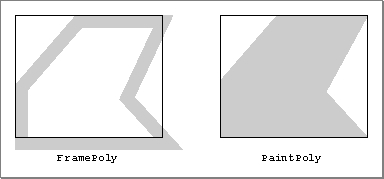

FramePoly
To draw the outline of a polygon, use theFramePolyprocedure.PROCEDURE FramePoly (poly:��PolyHandle);
poly- A handle to the polygon to draw.
DESCRIPTION
Using the current graphics port's pen pattern, pattern mode, and size, theFramePolyprocedure plays back the line-drawing commands that define the polygon whose handle you pass in thepolyparameter.The graphics pen hangs below and to the right of each point on the boundary of the polygon. Thus, the drawn polygon extends beyond the right and bottom edges of the polygon's bounding rectangle (which is stored in the
polyBBoxfield of thePolygonrecord) by the pen width and pen height, respectively. All other graphics operations, such as painting a polygon with thePaintPolyprocedure, occur strictly within the boundary of the polygon, as illustrated in Figure 3-22.Figure 3-22 Framing and painting polygons

If a polygon is open and being formed,FramePolyaffects the outline of the polygon just as if the line-drawing routines themselves had been called. If a region is open and being formed, the outside outline of the polygon being framed is mathematically added to the region's boundary.SPECIAL CONSIDERATIONS
TheFramePolyprocedure may move or purge memory blocks in the application heap. Your application should not call this procedure at interrupt time.